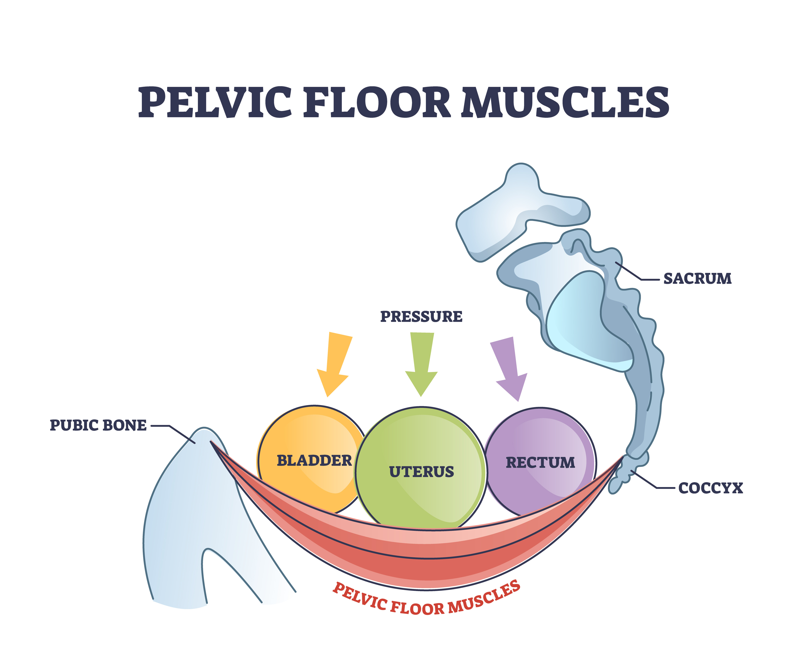

Do I Need Pelvic Floor Treatment?
All questions pelvis, answered.

Our pelvic floor is a group of muscles that is located deep in the bottom of the pelvis. I like to think of it as the stable floor to our trunk region, making up the bottom of our core muscles. It supports our pelvic organs, and coordinates with our abdominals, diaphragm, low back muscles and glutes to provide support to the body. It functions to start and stop peeing, pooping, and plays a crucial role in sexual function.
When pelvic floor and all its lovely friends are functioning properly, we don't pee when coughing or jumping, we can poop and pee without straining or pain, and good pelvic floor health can even improve our sexual experiences. It is an important group of muscles that until things go sideways, we don't think about at all!
Here is a list of common pelvic floor issues:
This list can apply to both women AND men!
- urge urinary incontinence
- stress urinary incontinence
- fecal incontinence
- urinary urgency and/or frequency
- painful sex
- difficulty or impossiblity of sex or tampon use
- pain with orgasm
- genital pain
- general pelvic pain
- painful periods
- prenatal and postpartum recovery
- pelvic heaviness
- post-prostatectomy pain or incontinence
- Pain or incontinence after pelvic or prolapse surgery
I want to emphasize all the above is TREATABLE. Finding a qualified practitioner that can teach you exactly what is happening with your pelvic floor can help you tremendously.
Additionally, older age or having a traumatic birth history does not mean you have to live with pain or incontinence!
An easy place to start to improve pelvic floor health, is with focusing on breathing.
There is a close relationship between our breathing and our pelvic floor health.
Think of our trunk as a soda can. We need pressure on the top, bottom and sides of the can evenly distributed to maintain soda in the can. It is very difficult to crush a full, unopened soda can. Now let's open it, and put a dent in that soda can. How easily can you crush it now? When we have dysfunction happening in our breathing patterns (the top of the soda can), it can put a LOT of pressure and strain on pelvic floor and its synergistic muscle groups, leading to symptoms.
As we inhale, our diaphragm descends downwards and our pelvic floor should relax. As we exhale, our diaphragm rises and our pelvic floor should rise. They essentially should mirror each other to mantain that pressure balance. In 99% of my patients, this relationship gets reversed, putting uneven pressure on the system and contributing to symptoms.
So... lets breathe together!
- Perform this laying down or seated. Place your hands on the sides of your lower ribs.
- Inhale into your hands, and feel your breath go into your belly and sides.
- Slowly exhale. I like to do a count of 4 to inhale, and a count of 4 to exhale.
- If you feel good about this, try adding in a gentle pelvic floor contraction as you exhale, and relaxation as you inhale. Feel backwards? That is common when you have pelvic floor symptoms!
Kegels are NOT always the answer.
More often than not, they are the WRONG answer.
Majority of my clients first need to work on relaxing their pelvic floor, before strengthening. This is at least 80% of my clients! Lets compare the pelvic floor to our bicep muscle. When are bicep is relaxed, it allows our arm to go fully straight. When we contract our bicep, it bends our elbow. Now imagine my bicep is constantly contracting, and our arm is basically always in a t-rex position. Not very useful, is it? When our pelvic floor is too tight, it is like that overly tight bicep muscle. We can't use our pelvic floor to its full capacity. If we restore normal resting tone and control FIRST, then we can work on strengthening. I have had a number of patients that just restoring normal resting tone was enough to eliminate their symptoms.
So you ask, how do I know if my pelvic floor is too tight?
- When you kegel, can you feel relaxation afterwards?
- is it hard to start urinating?
- do you need to push to fully empty your bladder or bowels?
- do you have pain?
- Do you have leakage with exercise?
- Did you recently have any type of pelvic surgery?
I could write many more indications, but the main point is - kegels are NOT always the answer. Talk to a pelvic floor physical therapist or specialist to determine the right treatment course for you.